NASA SPACE APPS CHALLENGE 2026
Um simulador 3D para todas as idades: viva a rotina de bases em Marte, na Lua e numa cópia da Estação Espacial, com dados reais da NASA.
aniramanin.github.io/missao-liastra
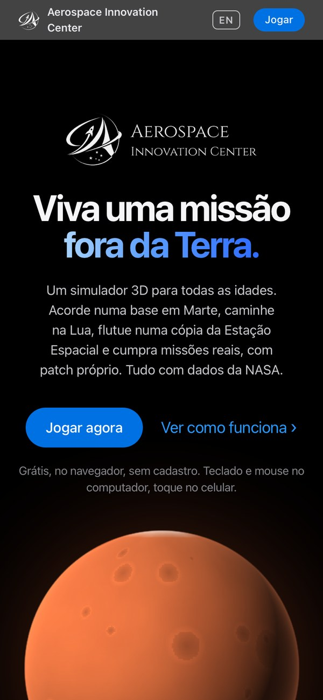
A IDEIA
Sem download e sem cadastro. Abre no computador da escola, no Chromebook e no celular, e cada decisão do jogador tem uma consequência real.
3
mundos em 3D
11
missões reais
6
culturas na estufa
2
idiomas: PT e EN
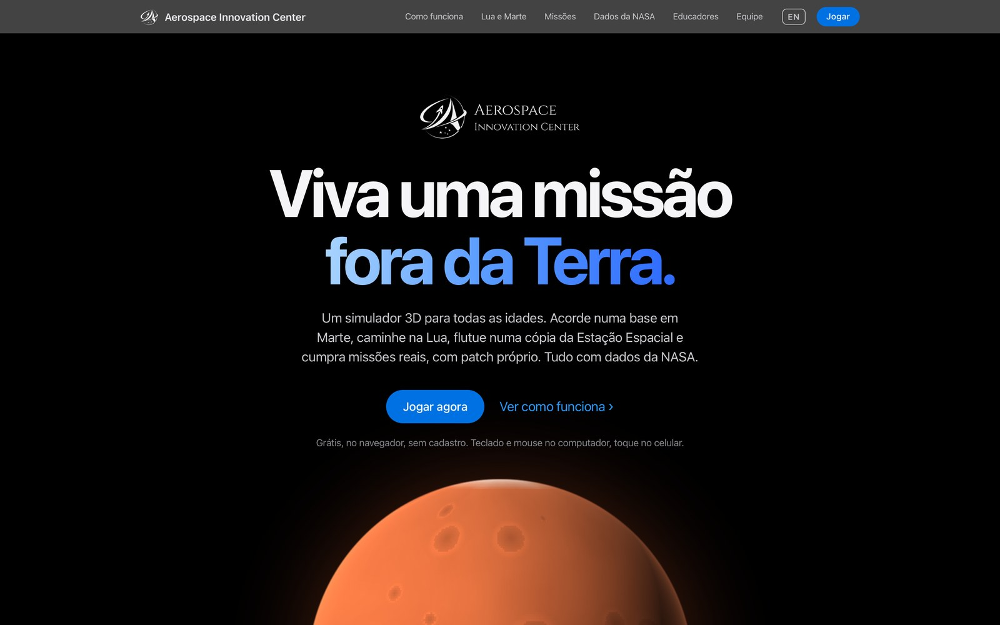
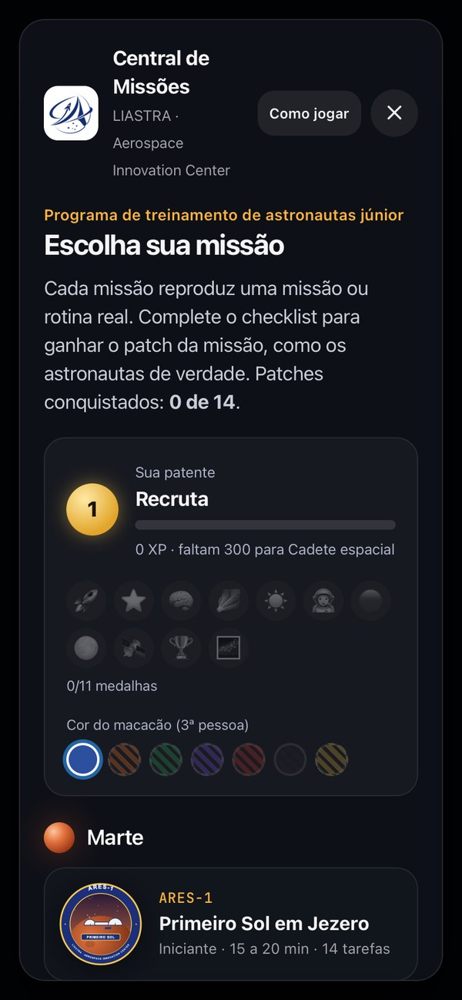
Aerospace Innovation Center · LIASTRA Institute
TRÊS MUNDOS
Estufa, laboratório, rover e pouso, com tempestades de poeira e solares.
Polo sul: gelo nas crateras, noites de vários dias e reator de fissão.
Cópia da ISS com Cupola e Canadarm2, dando uma volta na Terra a cada 90 minutos.
CIÊNCIA DE VERDADE
O jogo segue o Sol de hoje e usa números medidos em missões reais, sempre com a fonte na tela.
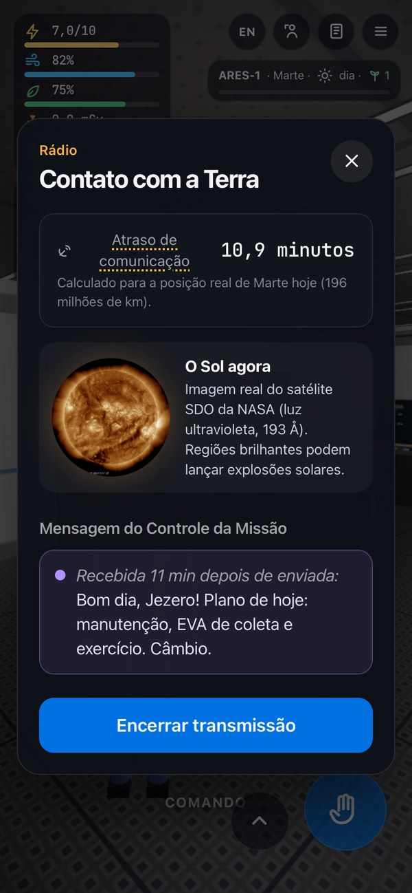
DONKI · CCMC/NASA
Tempestades solares reais dos últimos 30 dias definem o risco de cada dia da missão.
SDO · NASA
A imagem do Sol de hoje aparece no rádio da base e no site.
JPL · POSIÇÕES DOS PLANETAS
O atraso das mensagens entre a Terra e Marte é calculado para a data de hoje.
CURIOSITY RAD · CHANG’E 4
0,67 mSv por dia em Marte e 1,37 mSv por dia na Lua, medidos na superfície.
Fontes: api.nasa.gov · sdo.gsfc.nasa.gov · ssd.jpl.nasa.gov · Hassler et al. 2014 · Zhang et al. 2020
11 MISSÕES · RECOMPENSAS
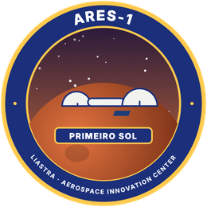
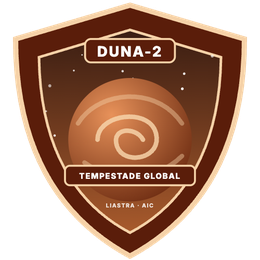
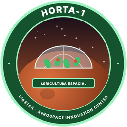
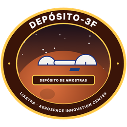
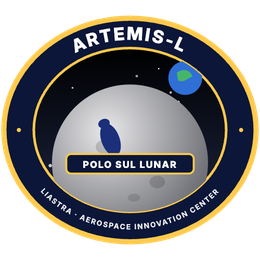
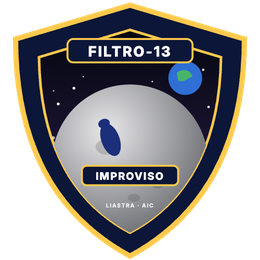
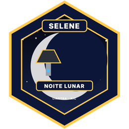
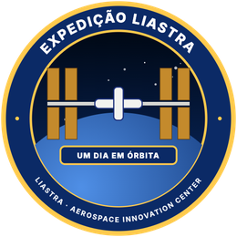
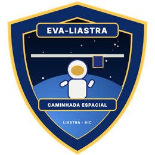
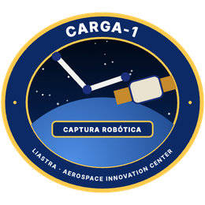
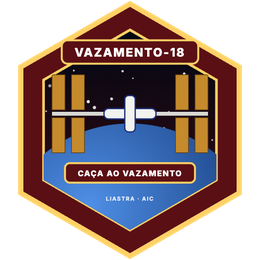
XP e 7 patentes
de Recruta a Lenda espacial
11 medalhas
três estrelas, EVA, agricultor…
7 cores de traje
liberadas a cada patente
Quiz no fim
3 perguntas, com explicação
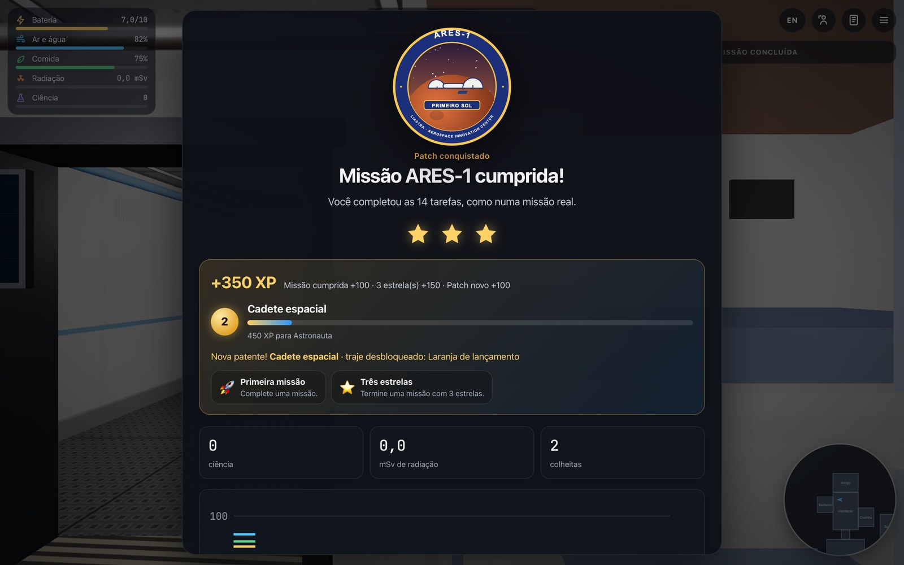
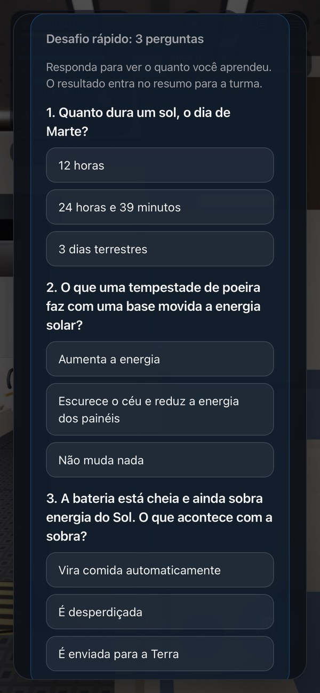